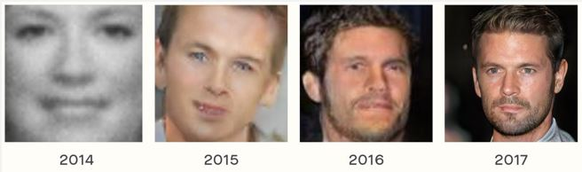

La génération de contenu par l'IA
spear phishing, deepfakes, désinformation, chatbots...
Cette partie traite d’une capacité récente des systèmes d’IA : celle de générer automatiquement du contenu réaliste. L’intelligence artificielle est désormais capable grâce à des GAN (Genrative Adversarial Networks ou Réseaux Adverses Génératifs) de synthétiser des images, des vidéos, du son et même du texte. La génération de contenu par IA a permis de nouvelles applications bénéfiques mais peut également être source de risques. Cette partie donne des exemples de problèmes liés au spear phishing, aux deepfakes, à la désinformation en général et aux chatbots (mais d’autres problèmes non présentés ici existent, cf sources pour aller plus loin).

Aujourd’hui il devient difficile de distinguer des images synthétiques par rapport à de vrais photos, ce qui n’était pas le cas il y a quelques années. L’image ci-dessous montre les progrès réalisés pour la création de visages.  De même, la synthèse automatique de texte devient de plus en plus réaliste. Vous pouvez expérimenter le modèle GPT-2 sur ce site (vous entrez le début d’un texte ou dialogue et l’IA invente la suite).
Le spear phishing par synthèse vocale
Une menace susceptible de se développer suite aux progrès réalisés en génération de contenu est celle du spear phishing (utiliser des messages personnalisés ou se faire passer pour un contact afin de soutirer des informations sensibles ou de l'argent à des personnes).
En 2019, une société d'énergie britannique anonyme a transféré 200 000£ à des criminels qui ont utilisé l’IA pour synthétiser la voix du directeur général de la société mère allemande lors d'un appel téléphonique. On peut imaginer qu’il va devenir de plus en plus facile de générer des messages qui sont suffisamment plausibles pour se faire passer pour quelqu’un d’autre digne de confiance dans les années à venir, ce qui constitue une vraie menace.
Les deepfakes
Les deepfakes sont un autre problème qui découle des progrès réalisés en générations de contenu.
Des vidéos synthétisés par des GAN mais qui paraissent réalistes circulent déjà. Elles concernent principalement des personnes célèbres puisque l’entraînement du modèle nécessite des clips audio et vidéo du sujet. A titre d’exemple, en voici une d’Obama et une de la reine d’Angleterre.
La plupart des vidéos deepfakes sont produits pour faire rire ou choquer sans intention de tromper les spectateurs. En effet, créer un deepfake qui soit vraiment réaliste nécessite de grandes quantités de données pour l’entraînement du modèle ainsi que des compétences techniques. Ainsi, d’autres méthodes plus simples et plus rentables existent si l’objectif est de cibler certaines personnes ou d’influencer l’opinion publique.
Pour autant, il y a trois problèmes à soulever. Premièrement, il est possible qu’avec le temps les vidéos deepfakes très réalistes deviennent plus facile à réaliser. Cela est dangereux puisque ces vidéos attribuent des propos à des personnes influentes (stars, chefs d’état…) qui ne les ont jamais tenus. Elles peuvent donc, en plus de nuire à la réputation de ces personnes, faire passer des messages qui ne sont pas les leurs. Pour pallier ce risque, il faudrait améliorer les performances des systèmes qui détectent ce type de vidéos.
Deuxièmement, il faut noter que même si les deepfakes réalistes sont peu développés, le simple fait qu’ils puissent exister suffit à compromettre ou affaiblir certaines sources d'autorité. L’existence de ce type de vidéo nuit à la confiance accordée aux reportages d’actualité et contribuent à créer un climat propice à la désinformation. De plus, les deepfakes peu convaincants (vidéos qui sont rapidement identifiées comme fausses par ceux qui les visionnent) ou les shallow fakes (vidéos réelles mais qui ont été modifiées par exemple en supprimant des images ou en accélérant la vidéo pour modifier l'impression qu'on a de ce qu'il s'est passé) deviennent facilement viraux et peuvent être très dommageables. L'extrait de vidéo suivante présente un shallow fake ou quelques images modifiées donnent un ressenti différent des événements (minutes 0:54 à 1:42)
Troisièmement, sans aller jusqu’à faire de longues vidéos, de simples extraits très brefs peuvent constituer une menace de taille. En effet, de tels extraits ne sont plus utilisés pour influencer l’opinion publique mais pour d’autres usages malveillants tels que le déverrouillage de systèmes qui utilisent des authentifications par reconnaissance faciale.
La désinformation : une conséquence de l'IA
De manière plus générale, le problème principal de la génération de contenu par l’IA survient lorsque ce contenu est destiné à influencer l'opinion publique, souvent par le biais d’une diffusion massive sur les réseaux sociaux.
Les fake news (informations fausses et manipulatrices présentées comme vraies et largement diffusées) se multiplient et constituent une vraie menace. Cela rejoint aussi le problème de la génération de contenu à grande échelle par des bots. Dans certains cas, des bots sont utilisés pour inonder les canaux d'information avec des informations qui ne sont pas nécessairement fausses et peuvent être simplement distrayantes mais qui, de par leur quantité, rendent plus difficile l'accès à des informations plus pertinentes. Sans entrer dans les détails, on peut aussi évoquer les campagnes de désinformation automatisées et personnalisées. Le documentaire Netflix « The Great Hack » sur Cambridge Analytica explique comment des citoyens américains dans les circonscriptions électorales sensibles ont été ciblés avec des messages personnalisés dans le but d’influencer leur vote.
Pour pallier ces problèmes, des moyens techniques se développent progressivement pour essayer de détecter les deepfakes, la désinformation ou la présence massive de robots sur les réseaux sociaux. Par exemple, le « Fake News Challenge » dont l’objectif est de détecter automatiquement les fake news est un concours qui devrait encourager la recherche de nouvelles solutions à cet enjeu. Par ailleurs, certaines techniques reposent sur des « signatures digitales » qui permettent de certifier que des images et vidéos n’ont pas été altérées, ou qu’une information diffusée dans un média les médias a effectivement été produit par la personne ou l'organisation concernée.
Des problèmes avec le texte généré par des chatbots
Enfin, d’autres effets néfastes liés à la génération de contenu par IA viennent du manque de précision au moment de créer le modèle, qui se traduit par un manque de contrôle sur ce qui est généré. En voici un exemple.
En 2016, Microsoft a créé un robot appelé Tay IA qui devait participer à des conversations sur des réseaux sociaux et des applications de messagerie (selon leurs termes, « conçu pour engager et divertir les gens là où ils se connectent en ligne par le biais de conversations informelles et amusantes »). Ce robot était destiné aux Américains de 18 à 24 ans et en mars 2016, Microsoft l’a testé en le déployant sur Twitter pour voir comment il interagissait avec les humains. Cependant, les phrases générées, bien que correctes au début, ont rapidement dérapé suite aux questions et paroles d’autres utilisateurs qui voulaient tester les limites de ce bot et le pousser à tenir certains propos, comme on peut voir sur l’image ci-dessous. Au bout de 8h, Microsoft a préféré supprimer ce bot parce qu’il était devenu raciste et générait des réponses inappropriées. Cet exemple n’est pas unique et montre que bien qu’un bot puisse générer du texte, il n’a pas les mêmes propriétés qu’un humain et les autres utilisateurs vont naturellement vouloir tester ses limites voir en abuser.